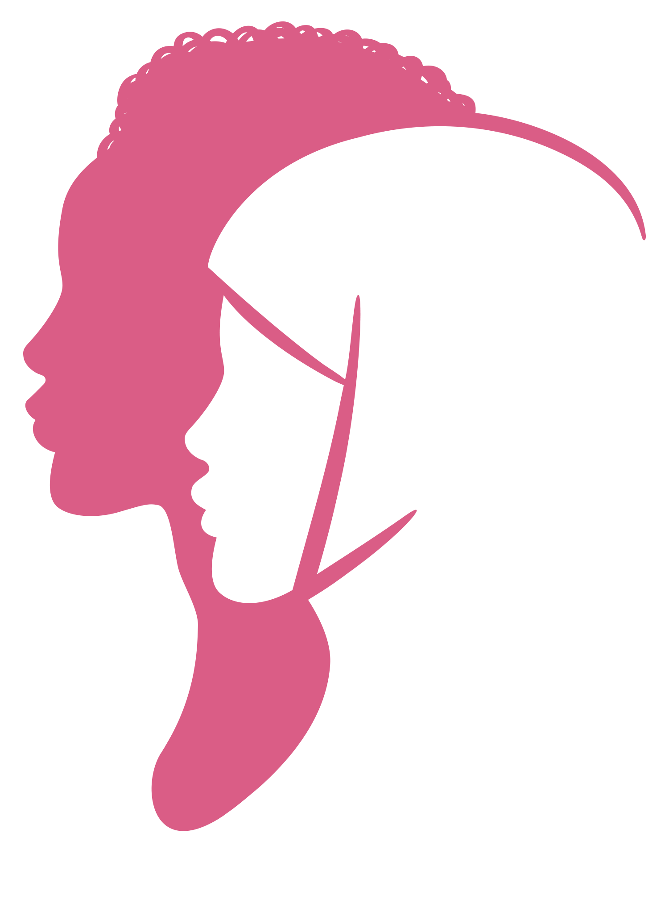

Perempuan
Berdaya
Banyak perempuan di Indonesia masih terpinggirkan. Suara dan aspirasi mereka diabaikan, kerja pun tak dianggap. Laporan Gender Global 2017 oleh World Economic Forum menyebut indeks ketimpangan gender di Indonesia berada di urutan 84 dari daftar 144 negara. Namun banyak yang tak diam. Mereka bergerak dan menggandeng para perempuan lainnya untuk hidup lebih baik, lebih bermartabat.
-
Nani Zulminarni
Inisiator pemberdayaan perempuan kepala keluarga miskin
-

Wilhelmina Mali Dappa
Memajukan Perempuan di Sumba Barat Daya.
-

Judhi Kristantini
Inisiator gerakan Saya Perempuan Anti Korupsi
-
Wendelina Olin
Pembela perempuan dan anak korban kekerasan dalam rumah tangga
-
Rubiah
Perempuan kuat di Pasar Yogyakarta
-
Lita Anggraeni
Pendidik pekerja sektor domestik
-
Lian Gogali
Menggandeng perempuan ke garda perdamaian